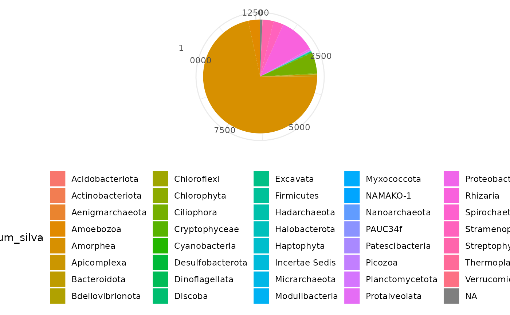

R/silva_annotator_deprec.R
silva_annotator_deprec.RdImporting and formatting taxonomic annotations obtained with the SILVAngs pipeline (https://ngs.arb-silva.de/silvangs/) and including it in a metabarlist object.
silva_annotator_deprec(metabarlist, silva.path, clust.path)a metabarlist object
path to a table from the SILVAngs pipeline, typically zipfile > ssu > exports > xxx---ssu---otus.csv
path to a file from the SilvAngs pipeline indicating MOTU cluster membership, typically zipfile > ssu > stats > sequence_cluster_map > data > xxx---ssu---sequence_cluster_map---tmptaxo.clstr
a metabarlist object with table `motus` including the taxonomic assignments from silva
Users can be interested in using the SILVAngs pipeline for assigning a taxon to DNA sequences/ MOTUs. Assuming that it is done on data already filtered (i.e. dereplicated, clustering etc.), resulting in one sequence per sequence or MOTU, one can then use the SILVAngs pipeline by setting all filtering parameters to "null" (i.e. returning to no filtration) and the taxonomic assignments parameters by default (or following the user's preferences). These taxonomic assignments are compiled in the data archives provided by SILVAngs, in which two files are important for the function `silva_annotatorr_deprec`:
`zipfile>ssu>exports>xxx---ssu---otus.csv`: a csv file containing the taxonomic assignment for each OTU
`zipfile>ssu>stats>sequence_cluster_map>data>xxx---ssu---sequence_cluster_map---tmptaxo.clstr`: a file containing the mapping informations of sequences to their respective MOTUs. Even though the clustering is done before using the SILVAngs pipeline and that the clustering parameters in this pipeline are settled to 100% identity of clustering, SILVAngs uses CDHit, which can group together OTUs sharing the same prefix/suffix. So it is common to retrieve less assignations than what was expected.
# \donttest{
dir <- tempdir()
url = "https://raw.githubusercontent.com/metabaRfactory/metabaR_external_data/master/"
silva_file = "lit_euk---ssu---otus.csv"
silva_url = paste(url, silva_file, sep="")
silva_path <- file.path(dir, silva_file)
download.file(silva_url, silva_path)
clust_file = "lit_euk---ssu---sequence_cluster_map---litiere_euk_cl97_agg_filt.clstr"
clust_url = paste(url, clust_file, sep="")
clust_path <- file.path(dir, clust_file)
download.file(clust_url, clust_path)
data(soil_euk)
soil_euk <- silva_annotator_deprec(
metabarlist = soil_euk,
silva.path = silva_path,
clust.path = clust_path)
#> Warning: Some PCRs in metabarlist have a number of reads of zero in table `reads`!
library(ggplot2)
ggplot(soil_euk$motus, aes(x=factor(1), fill=phylum_silva)) +
geom_bar() + coord_polar("y") +
theme_minimal() + labs(x=NULL, y=NULL) +
theme(legend.position = "bottom")

# }